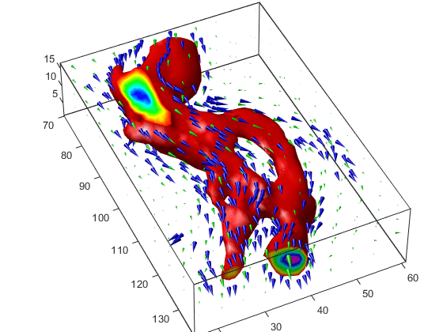

Vector Field Displayed with Cone Plots
What Cone Plots Can Show
This example plots the velocity vector cones for the wind data.
The graph produced employs a number of visualization techniques:
An isosurface is used to provide visual context for the cone plots and to provide means to select a specific data value for a set of cones.
Lighting enables the shape of the isosurface to be clearly visible.
The use of perspective projection, camera positioning, and view angle adjustments composes the final view.
1. Create an Isosurface
Displaying an isosurface within the rectangular space of the data provides a visual context for the cone plot. Creating the isosurface requires a number of steps:
Calculate the magnitude of the vector field, which represents the speed of the wind.
Use
isosurfaceandpatchto draw an isosurface illustrating where in the rectangular space the wind speed is equal to a particular value. Regions inside the isosurface have higher wind speeds, regions outside the isosurface have lower wind speeds.Use
isonormalsto compute vertex normals of the isosurface from the volume data rather than calculate the normals from the triangles used to render the isosurface. These normals generally produce more accurate results.Set visual properties of the isosurface, making it red and without drawing edges (
FaceColor,EdgeColor).load wind wind_speed = sqrt(u.^2 + v.^2 + w.^2); hiso = patch(isosurface(x,y,z,wind_speed,40)); isonormals(x,y,z,wind_speed,hiso) hiso.FaceColor = 'red'; hiso.EdgeColor = 'none';
2. Add Isocaps to the Isosurface
Isocaps are similar to slice planes in that they show a cross section of the
volume. They are designed to be the end caps of isosurfaces. Using interpolated face
color on an isocap causes a mapping of data value to color in the current colormap.
To create isocaps for the isosurface, define them at the same isovalue (isocaps, patch, colormap).
hcap = patch(isocaps(x,y,z,wind_speed,40),... 'FaceColor','interp',... 'EdgeColor','none'); colormap hsv
3. Create the First Set of Cones
Use
daspectto set the data aspect ratio of the axes before callingconeplotso function can determine the proper size of the cones.Determine the points at which to place cones by calculating another isosurface that has a smaller isovalue (so the cones are displayed outside the first isosurface) and use
reducepatchto reduce the number of faces and vertices (so there are not too many cones on the graph).Draw the cones and set the face color to
blueand the edge color tonone.daspect([1 1 1]); [f,verts] = reducepatch(isosurface(x,y,z,wind_speed,30),0.07); h1 = coneplot(x,y,z,u,v,w,verts(:,1),verts(:,2),verts(:,3),3); h1.FaceColor = 'blue'; h1.EdgeColor = 'none';
4. Create Second Set of Cones
Create a second set of points at values that span the data range (
linspace,meshgrid).Draw a second set of cones and set the face color to green and the edge color to none.
xrange = linspace(min(x(:)),max(x(:)),10); yrange = linspace(min(y(:)),max(y(:)),10); zrange = 3:4:15; [cx,cy,cz] = meshgrid(xrange,yrange,zrange); h2 = coneplot(x,y,z,u,v,w,cx,cy,cz,2); h2.FaceColor = 'green'; h2.EdgeColor = 'none';
5. Define the View
Use the
axiscommand to set the axis limits equal to the minimum and maximum values of the data and enclose the graph in a box to improve the sense of a volume (box).Set the projection type to perspective to create a more natural view of the volume. Set the viewpoint and zoom in to make the scene larger (
camproj,camzoom,view).axis tight set(gca,'BoxStyle','full','Box','on') camproj perspective camzoom(1.25) view(65,45)
6. Add Lighting
Add a light source and use Gouraud lighting for the smoothest lighting of the
isosurface. Increase the strength of the background lighting on the isocaps to make
them brighter (camlight, lighting,
AmbientStrength).
camlight(-45,45) hcap.AmbientStrength = 0.6; lighting gouraud
